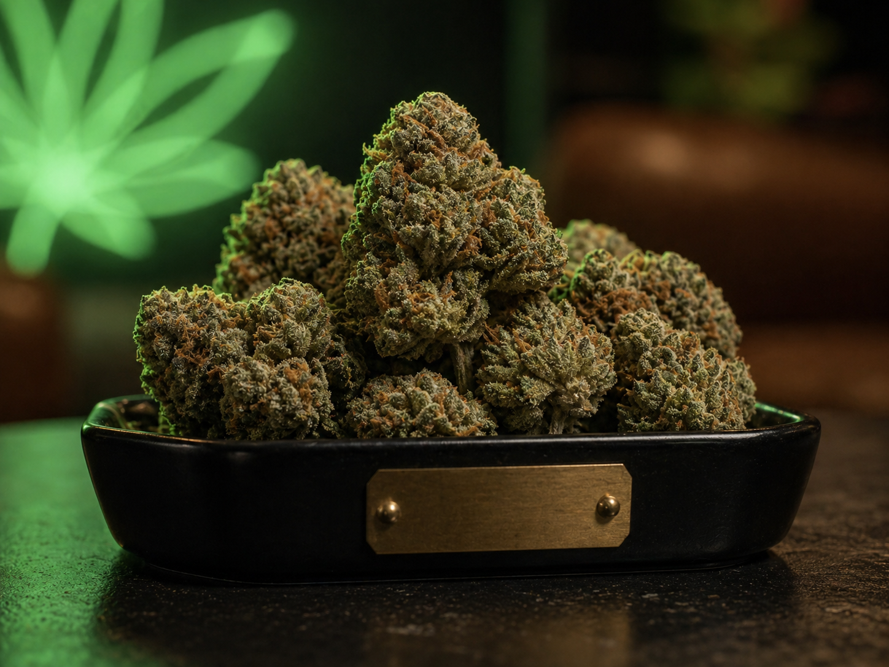

Catalog Depth
0
profiles with detailed filters
Curated Cannabis Field Guide
Browse, sort, and compare detailed strain profiles by sativa/indica balance, potency, terpene character, flavor, and effect notes.

Every card includes a fast-read balance bar and sortable percentage values.
Find strains by dominant aroma compounds, flavor direction, and likely experience.
Strain Index
Search by name, lineage, flavor, effect, or terpene. Sort by sativa, indica, THC, CBD, or name.
Compare
Select up to three strains from the index, or choose them below.
Terpenes
Terpenes are aromatic compounds found in cannabis and many other plants. They shape smell and flavor first, and they may also influence how a profile feels alongside cannabinoids, dose, freshness, and your own tolerance.
Terpenes are the volatile aroma molecules behind notes like citrus, pine, pepper, lavender, mango, fuel, and fresh herbs.
Two strains with similar THC can feel different because their terpene and minor cannabinoid profiles are different.
Start by tracking aromas you like, then compare the dominant terpene and effects across strains that worked well for you.
Learn
Use strain labels as a starting point, then evaluate cannabinoid range, terpene profile, freshness, and your own tolerance.
These categories are best treated as broad experience signals. The actual profile is better understood through genetics, cannabinoids, terpenes, and batch testing.
THC percentage is only one metric. A higher number does not guarantee a better session, and lower-potency profiles can be more functional or flavorful.
Citrus-heavy limonene, earthy myrcene, peppery caryophyllene, piney pinene, and floral linalool all point toward different aroma and feel directions.
A THC:CBD ratio can matter more than either number alone. High-CBD cultivars such as ACDC, Remedy, Harlequin, and Cannatonic usually read differently than high-THC flower.
A strain name is not a lab result. Grower, phenotype, harvest timing, curing, storage, and test lab can all shift potency and terpene numbers.
Parent strains explain why profiles cluster. Cookies, OG, Haze, Diesel, Kush, Skunk, and Z families often carry recognizable aroma and effect patterns.
Compare type balance, THC/CBD range, dominant terpene, flavors, and intended session. A good match is contextual: daytime, social, creative, sleep, or low-intensity use.
This directory is informational only. Follow local laws, avoid driving or operating equipment while impaired, and consult a licensed professional for medical questions.
Data Quality
The strain list was audited against public strain directories and breeder/genetics references. I removed no existing names because the current set maps to known cultivar names in public strain indexes, but I added missing classics and CBD-heavy cultivars to make the database more useful. This is still a curated catalog, not every strain name in existence.
Percentages are practical guide ranges, not medical claims or guaranteed lab results. Real batches vary by grower, phenotype, harvest, cure, storage, and testing lab.